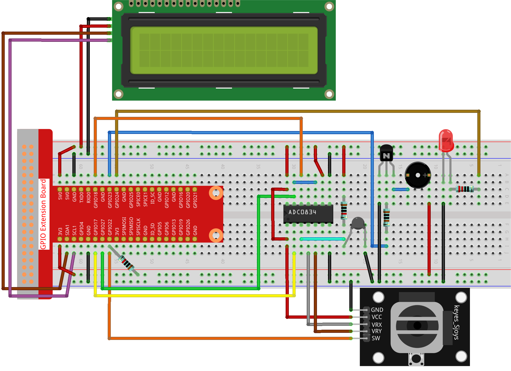

Note
Bonjour et bienvenue dans la communauté SunFounder Raspberry Pi & Arduino & ESP32 Enthusiasts sur Facebook ! Plongez plus profondément dans l’univers du Raspberry Pi, Arduino et ESP32 avec d’autres passionnés.
Pourquoi nous rejoindre ?
Support d’experts : Résolvez les problèmes après-vente et les défis techniques grâce à l’aide de notre communauté et de notre équipe.
Apprendre et partager : Échangez des conseils et des tutoriels pour améliorer vos compétences.
Aperçus exclusifs : Bénéficiez d’un accès anticipé aux annonces de nouveaux produits et aux avant-premières.
Réductions spéciales : Profitez de réductions exclusives sur nos produits les plus récents.
Promotions festives et concours : Participez à des concours et à des promotions spéciales pour les fêtes.
👉 Prêt à explorer et créer avec nous ? Cliquez sur [Ici] et rejoignez-nous dès aujourd’hui !
3.1.8 Moniteur de surchauffe
Introduction
Vous souhaitez peut-être concevoir un dispositif de surveillance de la surchauffe applicable dans diverses situations, par exemple, dans une usine, pour déclencher une alarme et l’arrêt automatique d’une machine en cas de surchauffe de circuit. Dans ce projet, nous utiliserons une thermistance, un joystick, un buzzer, une LED et un écran LCD pour fabriquer un appareil de surveillance de la température intelligent dont le seuil est réglable.
Composants nécessaires
Pour ce projet, nous aurons besoin des composants suivants :

Schéma de câblage
T-Board Name |
physical |
wiringPi |
BCM |
GPIO17 |
Pin 11 |
0 |
17 |
GPIO18 |
Pin 12 |
1 |
18 |
GPIO27 |
Pin 13 |
2 |
27 |
GPIO22 |
Pin15 |
3 |
22 |
GPIO23 |
Pin16 |
4 |
23 |
GPIO24 |
Pin18 |
5 |
24 |
SDA1 |
Pin 3 |
||
SCL1 |
Pin 5 |

Procédures expérimentales
Étape 1 : Construisez le circuit.
Étape 2 : Accédez au dossier contenant le code.
cd ~/davinci-kit-for-raspberry-pi/python-pi5
Étape 3 : Exécutez le fichier exécutable.
sudo python3 3.1.8_OverheatMonitor.py
Lorsque le programme est exécuté, la température actuelle et le seuil de haute température 40 sont affichés sur I2C LCD1602. Si la température actuelle dépasse le seuil, le buzzer et la LED se déclenchent pour vous avertir.
Le Joystick vous permet de régler le seuil de haute température. En déplaçant le joystick le long des axes X et Y, vous pouvez augmenter ou diminuer le seuil actuel. Appuyez à nouveau sur le joystick pour réinitialiser le seuil à sa valeur initiale.
Note
Si vous rencontrez l’erreur
FileNotFoundError: [Errno 2] No such file or directory: '/dev/i2c-1', vous devez consulter I2C Configuration pour activer l’I2C.Si vous obtenez l’erreur
ModuleNotFoundError: No module named 'smbus2', veuillez exécutersudo pip3 install smbus2.Si l’erreur
OSError: [Errno 121] Remote I/O errorapparaît, cela signifie que le module est mal câblé ou qu’il est défectueux.Si le code et le câblage sont corrects mais que l’écran LCD n’affiche toujours rien, vous pouvez ajuster le potentiomètre à l’arrière pour augmenter le contraste.
Avertissement
Si une erreur du type RuntimeError: Cannot determine SOC peripheral base address apparaît, veuillez vous référer à Si gpiozero ne fonctionne pas..
Code
Note
Vous pouvez Modifier/Réinitialiser/Copier/Exécuter/Arrêter le code ci-dessous. Mais avant cela, vous devez accéder au chemin source, par exemple davinci-kit-for-raspberry-pi/python. Après avoir modifié le code, vous pouvez l’exécuter directement pour voir l’effet.
#!/usr/bin/env python3
import LCD1602
from gpiozero import LED, Buzzer, Button
import ADC0834
import time
import math
# Initialisation du bouton du joystick, du buzzer et de la LED
Joy_BtnPin = Button(22)
buzzPin = Buzzer(23)
ledPin = LED(24)
# Définir le seuil initial de température supérieure
upperTem = 40
# Configuration des modules ADC et LCD
ADC0834.setup()
LCD1602.init(0x27, 1)
def get_joystick_value():
"""
Reads the joystick values and returns a change value based on the joystick's position.
"""
x_val = ADC0834.getResult(1)
y_val = ADC0834.getResult(2)
if x_val > 200:
return 1
elif x_val < 50:
return -1
elif y_val > 200:
return -10
elif y_val < 50:
return 10
else:
return 0
def upper_tem_setting():
"""
Adjusts and displays the upper temperature threshold on the LCD.
"""
global upperTem
LCD1602.write(0, 0, 'Upper Adjust: ')
change = int(get_joystick_value())
upperTem += change
strUpperTem = str(upperTem)
LCD1602.write(0, 1, strUpperTem)
LCD1602.write(len(strUpperTem), 1, ' ')
time.sleep(0.1)
def temperature():
"""
Reads the current temperature from the sensor and returns it in Celsius.
"""
analogVal = ADC0834.getResult()
Vr = 5 * float(analogVal) / 255
Rt = 10000 * Vr / (5 - Vr)
temp = 1 / (((math.log(Rt / 10000)) / 3950) + (1 / (273.15 + 25)))
Cel = temp - 273.15
return round(Cel, 2)
def monitoring_temp():
"""
Monitors and displays the current temperature and upper temperature threshold.
Activates buzzer and LED if the temperature exceeds the upper limit.
"""
global upperTem
Cel = temperature()
LCD1602.write(0, 0, 'Temp: ')
LCD1602.write(0, 1, 'Upper: ')
LCD1602.write(6, 0, str(Cel))
LCD1602.write(7, 1, str(upperTem))
time.sleep(0.1)
if Cel >= upperTem:
buzzPin.on()
ledPin.on()
else:
buzzPin.off()
ledPin.off()
# Boucle d'exécution principale
try:
lastState = 1
stage = 0
while True:
currentState = Joy_BtnPin.value
# Basculer entre le mode de réglage et le mode de surveillance
if currentState == 1 and lastState == 0:
stage = (stage + 1) % 2
time.sleep(0.1)
LCD1602.clear()
lastState = currentState
if stage == 1:
upper_tem_setting()
else:
monitoring_temp()
except KeyboardInterrupt:
# Nettoyage et sortie
LCD1602.clear()
ADC0834.destroy()
Explication du Code
Cette section importe les bibliothèques nécessaires pour le projet.
LCD1602est utilisé pour l’affichage LCD,gpiozerofournit des classes pour contrôler les LED, le Buzzer et le Bouton,ADC0834est utilisé pour la conversion analogique-numérique, ettimeetmathsont des bibliothèques standard de Python pour les fonctions temporelles et les calculs mathématiques respectivement.#!/usr/bin/env python3 import LCD1602 from gpiozero import LED, Buzzer, Button import ADC0834 import time import math
Ici, le bouton du joystick, le buzzer et la LED sont initialisés.
Button(22)crée un objet bouton connecté à la broche GPIO 22.Buzzer(23)etLED(24)initialisent respectivement le buzzer et la LED sur les broches GPIO 23 et 24.# Initialisation du bouton du joystick, du buzzer et de la LED Joy_BtnPin = Button(22) buzzPin = Buzzer(23) ledPin = LED(24)
Définit la limite de température supérieure initiale et initialise les modules ADC et LCD. L’écran LCD est initialisé avec une adresse (
0x27) et un mode (1).# Définir le seuil initial de température supérieure upperTem = 40 # Configuration des modules ADC et LCD ADC0834.setup() LCD1602.init(0x27, 1)
Cette fonction lit les valeurs X et Y du joystick en utilisant l’ADC0834. Elle renvoie une valeur de changement basée sur la position du joystick, qui sera utilisée pour ajuster le seuil de température.
def get_joystick_value(): """ Reads the joystick values and returns a change value based on the joystick's position. """ x_val = ADC0834.getResult(1) y_val = ADC0834.getResult(2) if x_val > 200: return 1 elif x_val < 50: return -1 elif y_val > 200: return -10 elif y_val < 50: return 10 else: return 0
Ajuste la limite de température supérieure en utilisant l’entrée du joystick. La nouvelle limite est affichée sur l’écran LCD.
def upper_tem_setting(): """ Adjusts and displays the upper temperature threshold on the LCD. """ global upperTem LCD1602.write(0, 0, 'Upper Adjust: ') change = int(get_joystick_value()) upperTem += change strUpperTem = str(upperTem) LCD1602.write(0, 1, strUpperTem) LCD1602.write(len(strUpperTem), 1, ' ') time.sleep(0.1)
Lit la température actuelle du capteur à l’aide de l’ADC0834 et la convertit en Celsius.
def temperature(): """ Reads the current temperature from the sensor and returns it in Celsius. """ analogVal = ADC0834.getResult() Vr = 5 * float(analogVal) / 255 Rt = 10000 * Vr / (5 - Vr) temp = 1 / (((math.log(Rt / 10000)) / 3950) + (1 / (273.15 + 25))) Cel = temp - 273.15 return round(Cel, 2)
Surveille et affiche la température actuelle et la limite supérieure. Si la température dépasse la limite supérieure, le buzzer et la LED sont activés.
def monitoring_temp(): """ Monitors and displays the current temperature and upper temperature threshold. Activates buzzer and LED if the temperature exceeds the upper limit. """ global upperTem Cel = temperature() LCD1602.write(0, 0, 'Temp: ') LCD1602.write(0, 1, 'Upper: ') LCD1602.write(6, 0, str(Cel)) LCD1602.write(7, 1, str(upperTem)) time.sleep(0.1) if Cel >= upperTem: buzzPin.on() ledPin.on() else: buzzPin.off() ledPin.off()
La boucle principale alterne entre les modes de réglage et de surveillance en fonction des pressions sur le bouton du joystick. Elle met continuellement à jour soit le réglage de la température, soit la surveillance de la température actuelle.
# Boucle d'exécution principale try: lastState = 1 stage = 0 while True: currentState = Joy_BtnPin.value # Basculer entre le mode de réglage et le mode de surveillance if currentState == 1 and lastState == 0: stage = (stage + 1) % 2 time.sleep(0.1) LCD1602.clear() lastState = currentState if stage == 1: upper_tem_setting() else: monitoring_temp()
Cette section garantit un nettoyage correct et la libération des ressources lorsque le programme est interrompu.
except KeyboardInterrupt: # Clean up and exit LCD1602.clear() ADC0834.destroy()